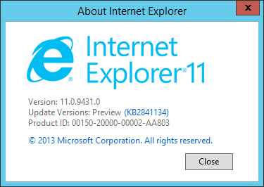
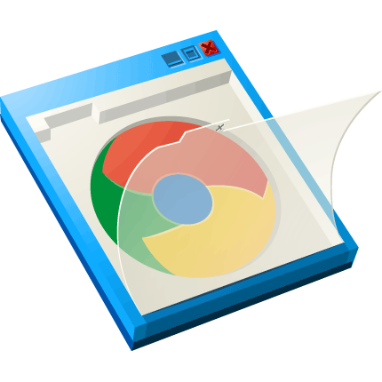

Chrome 27
Switching from WebKit to Blink in Chrome 28 (currently in beta)
Removed ~9M lines of code
New threaded HTML parser
Loads DOM content about 10% faster and reduces the maximum stop time due to parsing by 40%

— Brian Moeskau (@bmoeskau)
— Kyle Samani, CEO of Pristine
Document fragments which are unused by the document when loaded, but are parsed as HTML and are available at runtime for use by the web page.
// HTML:
<template id="comment-template">
<img class="avatar" src="">
<div class="comment-text"></div>
</template>
// JS:
var comment = document
.querySelector("#commentTemplate")
.content.cloneNode(true);
Describes the method for enabling the author to define and use new types of DOM elements in a document.
<my-thing>Cool!</my-thing>HTML documents that are linked as external resources from another HTML document. The document that links to an import is called a master document.
<link rel="import" href="/imports/another.html">Allows multiple DOM trees...to be composed into one larger tree when rendered. These shadow trees...establish encapsulation boundaries while retaining standard DOM composability semantics.
<shadow-root>...</shadow-root>Something that enhances or overrides the presentation of an existing element.
Concept only, no official spec yet
// HTML:
<decorator id="details-open">
<template>
<p>Open: <content></content></p>
</template>
</decorator>
// CSS:
details[open] {
decorator: url(#details-open);
}Handle console gamepad events via JS
Working draft status
Implemented in Chrome & FF dev channels
ZTE Open smartphone launched in Spain TODAY (July 2)!
Initial focus on emerging markets
Adaptive app search will "transform [the device]
to fit a user’s needs at any moment."
"First devices powered completely
by Web technologies"
Name the latest versions of:
Name the latest versions of:
Oh yeah, IE is at 10. But you knew that ;)
Switching from WebKit to Blink in Chrome 28 (currently in beta)
Removed ~9M lines of code
New threaded HTML parser
Loads DOM content about 10% faster and reduces the maximum stop time due to parsing by 40%
Released June 25
CSS3 Flexbox (unprefixed, enabled by default)
asm.js (within 2X native performance)
WebRTC (Real-Time Communication) API
HTML5 <data> and <time> elements
Released July 2 (today!)
First release based on Chromium (Blink)
Missing some features still (tabs, settings sync, themes)

Coming in Windows 8.1 (already in preview)
WebGL! (low-level 3D graphics API)
New console / debugging tools
Support for SPDY (Google's network protocol)
Awesome plugin that modernizes old IE
Google is retiring it in January 2014
Coming "this Fall"
New full-fledged web browser, as of TODAY (July 2)
No ETA yet (2.9 was just released June 26, last 2.x release)
New plugin architecture / slim core
New APIs: InAppBrowser (formerly ChildBrowser plugin), Globalization
Plugin discovery based on npm

Published by Facebook last month
"Composite Components"
Declarative markup & events
Bi-directional data binding
Plays nicely with other libs (jQuery, Bootstrap, etc.)
With React, you *never* generate strings. Instead, you construct a tree of lightweight objects that represent HTML elements and subcomponents that make up your component. This tree of objects is eventually serialized to HTML.
Native web components are still a little way off.
Luckily (as usual) libraries are leading the way!
Full Web Component polyfill library by Google
<element name="tk-element-databinding">
<template>
This is <strong>{{owner}}</strong>'s tk-element.
</template>
<script>
Polymer.register(this, {
owner: 'Brian'
});
</script>
</element>By Mozilla, mainly focused on custom elements
// JS:
xtag.register('modal', {
...
});
// HTML:
<x-modal>
<h3>X-Tags Modal Map</h3>
<x-map data-key="6c86bb5b30a442c"></x-map>
</x-modal>var Hello = React.createClass({
render: function() {
return <div>Hello {this.props.name}</div>;
}
});
React.renderComponent(
<Hello name="World" />, document.body
);<label>Name:</label>
<input type="text" ng-model="yourName" value="World">
<h1>Hello {{yourName}}!</h1>App.ApplicationController =
Ember.Controller.extend({
yourName: "World"
});
<p>Hello, {{yourName}}!</p>July 3 (tomorrow) at 7pm, right here (free)
Fri-Sat, July 12-13 ($20)
"Google Glass WTF" by Whurley, hands-on Glass demos
Fri-Sat, July 19-20 ($300)
Mon, July 29, 6-9pm ($15)
Sept 30-Oct 1 ($945 through Aug 5, register now)
Oct 10, 5-10pm (free, register now)
Nov 15-16 ($??, not open yet) — more info
...that Chrome's style inspector has a built-in color picker?
...that Chrome can un-minify JavaScript in the console?
/
#